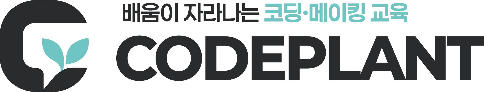

준비하고 실행
설치·로그인 상태를 확인하고, Codex에 시작문을 입력합니다.
복사할 지시문설치·프로그램 사용법
ATTENTION / LECTURE 12시간 핵심 시연
Codex 또는 Claude를 메인으로 선택하고, 자료를 읽고, 역할을 나누고, 상대 AI의 반론으로 결과를 개선합니다.
먼저 내려받은 site 폴더의 실행.cmd를 여세요. 이 화면은 강의자료 모음이며 AI는 각자의 PC에서 실행됩니다.
설치·로그인 상태를 확인하고, Codex에 시작문을 입력합니다.
복사할 지시문설치·프로그램 사용법공개 연습 자료를 올리고 실제 두 AI의 대화를 관찰합니다.
공개 실습 자료후속 질문 예시반론의 수용 이유를 읽고, 사람이 원문과 결과를 대조합니다.
120분 강의 진행안전체 제작 과정·CLI·MCPREFERENCE
Codex·Claude·Gemini 중 하나만 연결해 사용할 수 있습니다. Gemini 실제 응답은 Google 로그인 후 확인해야 합니다.